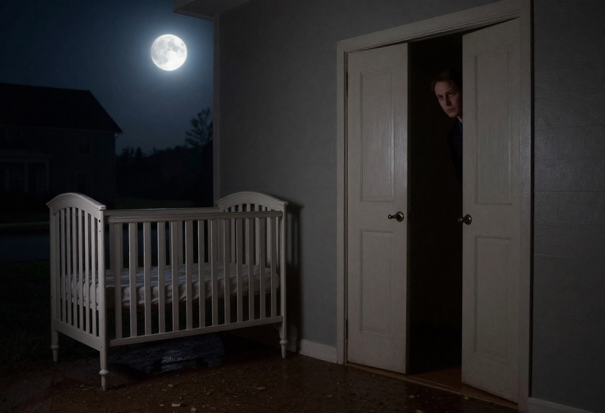

Rüyada Biri Tarafından Sessizce İzlenmek Ne Anlama Gelir?
Rüyada birinin sizi uzaktan, sessizce ve hiçbir şey söylemeden izlediğini görmek, çoğu insanda merak ve tedirginlik duyguları uyandırır. Bu tür rüyalar genellikle bilinçaltının güçlü göndermeler yaptığı sahnelerdir. Kimi zaman uyarı niteliği taşır, kimi zaman ise kişinin içsel durumunu, korkularını veya bastırdığı duyguları yüzeye çıkarır.
Bu yazıda rüyada biri tarafından sessizce izlenmenin manevi, psikolojik ve günlük yaşamla ilgili olası yorumlarını detaylı şekilde inceleyeceğiz.
Rüyada Sessizce İzlenmek Genel Anlamı
Rüyada takip edilmek veya gözlenmek, çoğunlukla aşağıdaki sembolleri işaret eder:
- Kontrol altında hissetme
- Görülme, fark edilme, sorgulanma korkusu
- Gizli duyguların açığa çıkması
- Çevreden gelecek müdahaleler
- Gizli hayranlık veya ilgi
- İçsel muhasebe ve kendini değerlendirme süreci
Sessizce izleyen kişinin kim olduğu, nasıl hissettirdiği ve rüyanın nerede geçtiği yorumun önemli parçalarıdır.
Rüyada Tanımadığınız Biri Tarafından İzlenmek
Eğer rüyada sizi tanımadığınız biri izliyorsa, bu genellikle bilinçaltınızın dış dünyaya dair belirsizlik, güvensizlik veya tehdit algısını temsil eder.
Anlamları:
- Yakın zamanda hayatınızda kontrolünüz dışında gelişen bir durum olabilir.
- Yeni tanıştığınız insanlara karşı temkinli davranıyor olabilirsiniz.
- Kariyer, ilişki veya sosyal çevrede üzerinizde baskı hissediyorsunuz.
Bu rüya çoğu zaman “tetikte olma” çağrısıdır.
Rüyada Tanıdığınız Biri Tarafından Sessizce İzlenmek
Rüyada tanıdığınız birinin sizi sessizce izlemesi, o kişiyle ilgili çözülmemiş bir meseleye işaret eder.
Olası yorumlar:
- O kişi sizden bir beklenti içinde olabilir.
- Onunla aranızda söyleyemediğiniz bir konu veya duygusal bir mesafe vardır.
- Rüyadaki kişi bir “sembol” olarak da görünebilir. Mesela sert mizahlı bir patron, sorumluluklarınızı temsil ediyor olabilir.
Rüyada Eski Sevgili Tarafından İzlenmek
Bu rüya genellikle kişinin geçmiş ilişkilerle ilgili bir tamamlanmamışlık duygusu taşıdığını gösterir.
Olası anlamlar:
- Geçmişte söyleyemediğiniz bir şey kalmış olabilir.
- Halen çözümlenmemiş duygularınız olabilir.
- Yeni ilişkide ilerleme kaydetmek için eski bağların tamamen kapanması gerektiğine işaret eder.
Rüyada Karanlıkta İzlenmek
Karanlık ortamda izlenmek, bilinçaltında saklı kalmış korkuların ve endişelerin yüzeye çıkması demektir.
Bu rüya şunlara işaret eder:
- Gelecek kaygısı
- Bilinmeyenden duyulan korku
- Etrafınızda niyetini anlamadığınız birinin olması
- Gizli bir rekabet, kıskançlık veya haset
Karanlık her zaman “bilinmeyeni” temsil eder; izleyen kişi ise bu bilinmeyenin sembolik formudur.
Rüyada Birden Fazla Kişi Tarafından İzlenmek
Eğer bir kalabalık sizi izliyorsa, bu durum toplumsal baskı, başkalarının ne düşündüğüne fazlasıyla takılma, yargılanma korkusu veya sosyal kaygı ile ilişkilendirilir.
Anlamı:
- İş veya aile çevresinde üzerinize sorumluluklar yığılmış olabilir.
- Başarı ya da başarısızlık konusunda çevrenin beklentileri sizi yoruyor olabilir.
Psikolojik Açıdan Rüyada İzlenmek
Psikolojide izlenme teması, genellikle kişinin kendi iç gözlem mekanizmasının çalışması ile ilişkilendirilir.
Psikolojik yorumlar:
- Kişi kendini fazla eleştiriyor veya yargılıyor olabilir.
- Özgüven eksikliği veya sosyal kaygı söz konusu olabilir.
- Bu rüya, bilinçaltının “kendini fark et” mesajıdır.
- Kimi zaman ise bastırılmış duyguların kişinin kendisini izlemesi olarak yorumlanır.
Spiritüel (Manevi) Yorum
Manevi bakış açısından rüyada izlenmek, korunma, uyarı veya rehberlik anlamı taşıyabilir.
Manevi anlamlar:
- Bir konuda kararsızsanız, sezgileriniz sizi yönlendirmeye çalışıyordur.
- Yakın gelecekte dikkat etmeniz gereken bir durum olabilir.
- Rüya, enerjinizi tüketen kişilerden uzak durmanız gerektiğini hatırlatır.
Rüyada İzleyen Kişinin Yüzünü Görememek
Yüzü görünmeyen kişi, çoğu zaman sizin gölgeleriniz, yani bastırdığınız duygularınızdır.
Bu tür rüyalar genellikle:
- Kendinizle yüzleşme ihtiyacı
- Bastırılmış öfke, korku veya pişmanlık
- Hayatınızda netlik arayışı
anlamına gelir.
Rüyada Sizi İzleyen Kişiye Tepki Vermek
- Sessizce izleyen kişiye bağırmak: Kendinizi savunma ihtiyacını gösterir.
- Kaçmak: Geçmişten kaçtığınız bir durum olabilir.
- Göz göze gelmek: Gerçek hayatta önemli bir yüzleşme yaklaşıyor olabilir.
Rüyanın Olumlu Yorumları
Her rüya olumsuz olmak zorunda değildir. Biri tarafından sessizce izlenmek bazen:
- Sizi gizliden gizliye takdir eden birinin varlığı
- Yeni bir fırsatın sizi beklediği
- Fark edilmek veya tanınmak
- İçsel uyanış
gibi olumlu anlamlara da gelebilir.
Sonuç
Rüyada biri tarafından sessizce izlenmek, kişinin iç dünyası, çevresi ve duygusal durumu hakkında önemli ipuçları taşır. Rüyanın tam yorumlanabilmesi için:
- İzleyen kişinin kim olduğu
- Rüyadaki duygularınız
- Mekânın karanlık/aydınlık oluşu
- İzlenmeye nasıl tepki verdiğiniz
gibi detaylar dikkate alınmalıdır.
Bu tür rüyalar, genellikle bilinçaltınızın sizi bir konuda dikkatli ol, yüzleş, farkına var gibi mesajlarla uyardığını gösterir.